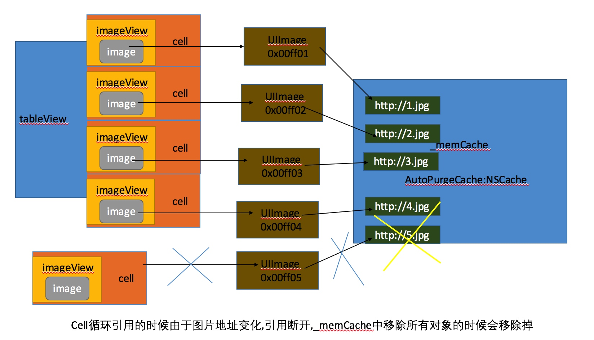

优化
美团点评技术团队: 深入理解Objective-C：方法缓存
Runloop
深入理解RunLoop --- 内部分享文章runloop中使用了该文章中的一张图.
GCD
GCD 深入理解：第一部分 中文翻译:译文
GCD 深入理解：第二部分
美团点评技术团队: 深入理解Objective-C：方法缓存
深入理解RunLoop --- 内部分享文章runloop中使用了该文章中的一张图.
GCD 深入理解：第一部分 中文翻译:译文
GCD 深入理解：第二部分
项目中如果显示图片比较多,会遇到内存涨的比较厉害,项目中用到 SDWebImage, 所以可以很简单的让内存缓存变稳定:
-(void)scrollViewDidScroll:(UIScrollView *)scrollView {
[[SDImageCache sharedImageCache] clearMemory];
}
原理:
- (void)clearMemory {
[self.memCache removeAllObjects];
}
_memCache 是 NSCache 类型的,
没有做任何操作的时候大概是这个样子的

添加clearMemory后:

这也是为什么滚动后屏幕上还显示图片的原因.
1.先升级Gem
sudo gem update --system
2.切换cocoapods的数据源
【先删除，再添加，查看】
gem sources --remove https://rubygems.org/
gem sources -a https://ruby.taobao.org/
gem sources -l
3.安装cocoapods
sudo gem install cocoapods
或者（如10.11系统）sudo gem install -n /usr/local/bin cocoapods
4.(可忽略)将Podspec文件托管地址从github切换到国内的oschina
【先删除，再添加，再更新】
pod repo remove master
pod repo add master http://git.oschina.net/akuandev/Specs.git
pod repo add master https://gitcafe.com/akuandev/Specs.git
pod repo update
5.设置pod仓库
pod setup
6.测试
【如果有版本号，则说明已经安装成功】
pod --version
7.利用cocoapods来安装第三方框架
01 进入要安装框架的项目的.xcodeproj同级文件夹
02 在该文件夹中新建一个文件podfile
03 在文件中告诉cocoapods需要安装的框架信息
a.该框架支持的平台
b.适用的iOS版本
c.框架的名称
d.框架的版本
8.安装
pod install --no-repo-update
pod update --no-repo-update
9.说明
platform :ios, '8.0' 用来设置所有第三方库所支持的iOS最低版本
pod 'SDWebImage','~>2.6' 设置框架的名称和版本号
版本号的规则：
'>1.0' 可以安装任何高于1.0的版本
'>=1.0' 可以安装任何高于或等于1.0的版本
'<1.0' 任何低于1.0的版本
'<=1.0' 任何低于或等于1.0的版本
'~>0.1' 任何高于或等于0.1的版本，但是不包含高于1.0的版本
'~>0' 任何版本，相当于不指定版本，默认采用最新版本号
10.使用pod install命令安装框架后的大致过程：
01 分析依赖:该步骤会分析Podfile,查看不同类库之间的依赖情况。如果有多个类库依赖于同一个类库，但是依赖于不同的版本，那么cocoaPods会自动设置一个兼容的版本。
02 下载依赖:根据分析依赖的结果，下载指定版本的类库到本地项目中。
03 生成Pods项目：创建一个Pods项目专门用来编译和管理第三方框架，CocoaPods会将所需的框架，库等内容添加到项目中，并且进行相应的配置。
04 整合Pods项目：将Pods和项目整合到一个工作空间中，并且设置文件链接。
可以让程序长时间压后台
// 后台执行：
dispatch_async(dispatch_get_global_queue(0, 0), ^{
// something
});
// 主线程执行：
dispatch_async(dispatch_get_main_queue(), ^{
// something
});
// 一次性执行：
static dispatch_once_t onceToken;
dispatch_once(&onceToken, ^{
// code to be executed once
});
// 延迟2秒执行：
double delayInSeconds = 2.0;
dispatch_time_t popTime = dispatch_time(DISPATCH_TIME_NOW, delayInSeconds * NSEC_PER_SEC);
dispatch_after(popTime, dispatch_get_main_queue(), ^(void){
// code to be executed on the main queue after delay
});
// 自定义dispatch_queue_t
dispatch_queue_t urls_queue = dispatch_queue_create("blog.devtang.com", NULL);
dispatch_async(urls_queue, ^{
// your code
});
dispatch_release(urls_queue);
// 合并汇总结果
dispatch_group_t group = dispatch_group_create();
dispatch_group_async(group, dispatch_get_global_queue(0,0), ^{
// 并行执行的线程一
});
dispatch_group_async(group, dispatch_get_global_queue(0,0), ^{
// 并行执行的线程二
});
dispatch_group_notify(group, dispatch_get_global_queue(0,0), ^{
// 汇总结果
});
原因：项目中想要实现购物车右上角显示购物车中上品数量，但是直接用UIBarButtonItem不能实现要求
这里是实现后的效果图：
一开始直接创建的UIBarButtonItem，但是不能直接往上面添加想要的效果，因为
NS_CLASS_AVAILABLE_IOS(2_0) @interface UIBarButtonItem : UIBarItem <NSCoding>
而且
NS_CLASS_AVAILABLE_IOS(2_0) @interface UIBarItem : NSObject <NSCoding, UIAppearance>
退而求其次，我们知道UIBarButtonItem有一个属性
@property(nullable, nonatomic,strong) __kindof UIView *customView; // default is nil
这说明我们可以使用UIButton来代替UIBarButtonItem，在UIButton上面添加想要的动画效果。
static CGFloat const kButtonWidth = 43.0f;
static CGFloat const kButtonHeight = 43.0f;
UIImage *cartImage = [[UIImage imageNamed:@"iconfont-cart"]imageWithRenderingMode:UIImageRenderingModeAlwaysOriginal];
UIButton *cartButton = [UIButton buttonWithType:UIButtonTypeCustom];
cartButton.frame = CGRectMake(0.0f, 0.0f, kButtonWidth, kButtonHeight);
cartButton.backgroundColor = [UIColor clearColor];
[cartButton setImage:cartImage forState:UIControlStateNormal];
[cartButton setImageEdgeInsets:UIEdgeInsetsMake(0.0f,(kButtonHeight- cartImage.size.width), 0.0f, 0.0f)];
[cartButton addTarget:self action:@selector(changeStatus:) forControlEvents:UIControlEventTouchUpInside];
[cartButton addSubview:self.numberLabel];
UIBarButtonItem *rightBarButtonItem = [[UIBarButtonItem alloc]initWithCustomView:cartButton];
self.navigationItem.rightBarButtonItem = rightBarButtonItem;
创建Label使用懒加载：
#pragma mark 购物车上面显示的按钮
-(UILabel *)numberLabel
{
if (!_numberLabel) {
static CGFloat const kNameLabelWidth = 14;
static CGFloat const kNameLabelHeight = 14;
static CGFloat const kNameLabelX = 40; // 父视图宽44，UI说改到这个位置
static CGFloat const kNameLabelY = 6;
_numberLabel = [UILabel new];
_numberLabel.hidden = YES;
_numberLabel.frame = CGRectMake(kNameLabelX, kNameLabelY, kNameLabelWidth, kNameLabelHeight);
_numberLabel.backgroundColor = [UIColor redColor];
_numberLabel.textColor = [UIColor whiteColor];
_numberLabel.font = [UIFont systemFontOfSize:9];
_numberLabel.textAlignment = NSTextAlignmentCenter;
_numberLabel.layer.cornerRadius = kNameLabelHeight * 0.5;
_numberLabel.layer.masksToBounds = YES;
}
return _numberLabel;
}
这里说下为什么设置为hidden，因为要求数量为0的时候不显示，数量不为0显示，如果删除后还要添加不如直接控制hidden。
其他的就是设置Label显示的数字了，这里就不写了。